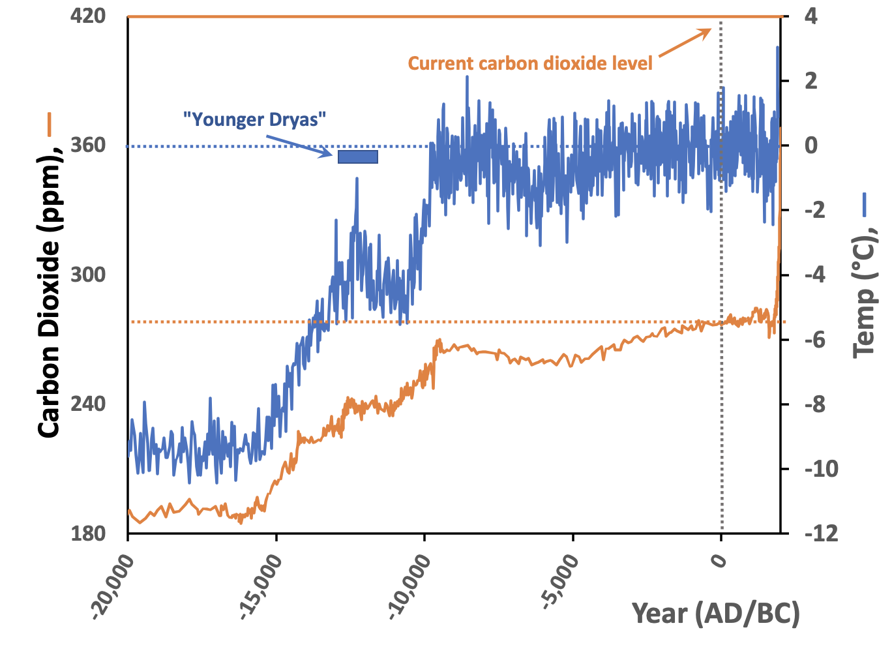
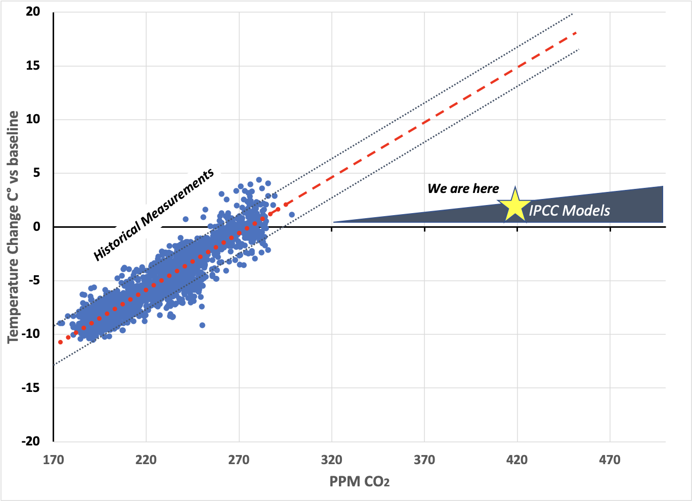

Before I start, let me suggest a pre-read for next week’s installment. Today’s New York Times published an article about the production of Green Hydrogen in Western Australia , an effort to reduce the carbon intensity of mining in that arid part of the world. One of my favorite savants, Saul Griffith of OtherLab, is quoted as a skeptic in the article:
To replace fossil fuels, [Saul] said, “the electricity you use to make it would have to be ridiculously cheap. And if you have that, why use it to make hydrogen?”…[Hydrogen is] “not a fuel that will save the world.” Better to spend the money, he and others argue, on reducing renewable electricity costs so that nearly everything can be electrified.
Ironically, this quote is immediately followed by:
Mr. Forrest [the owner of the mine] says skeptics simply lack scientific knowledge. Fortescue [the mining company], he said, will mix hydrogen with carbon dioxide so it is similar enough in consistency to liquefied natural gas that it can be transported in the same tankers.
Saul is a Macarthur “genius” grant recipient, a founder of countless successful startup companies, and has an impeccable academic pedigree. Like most humans, he may lack many things, but “scientific knowledge” is not near the top of the list!
Now, back to our regularly scheduled programming.
The public marketing of “climate change” (aka “the Climate Crisis”), in point of fact, creates anxiety without satisfaction. It creates the anxiety of an amorphous yet existential problem without providing the relief of a logical engineering solution. Psychologically, anxiety without treatment compels irrational actions, ultimately delaying healing. Consequently, I prefer to recast “climate change” as a difficult but solvable problem of “climate control”, a healing approach that uses technology and scientific principles to adjust the planet’s thermostat.
Let me lay out a few limiting principles regarding “climate control” elaborated on in previous installments.
-
The only atmospheric component that really matters is carbon dioxide (CO2). Adjusting other atmospheric constituents won’t make a difference if that’s not controlled.
-
Without capturing CO2 via direct air capture, climate control is unlikely to be achieved because:
-
CO2 persists in the atmosphere for centuries,
-
Decarbonization is not economically sustainable, and
-
Climate models lack precision and reflect the bias of human norms. The only consensus is that global warming is inevitable if CO2 levels are unregulated.
-
-
Without linking direct air capture to economically productive (i.e., profitable) activity, economics will eventually invalidate its impact. If implemented globally, artificial carbon markets must be transitional.
-
The biosphere and the atmosphere exchange carbon quickly, but the biosphere retains only a fraction of the total. So removing carbon from the biosphere will pull carbon from the atmosphere quickly enough to make a difference.
-
Solutions must begin with scale in mind—Acting locally while trying to influence geophysics is a modern rain dance.
From my perspective, as a classically trained organic chemist, it’s clear that the energy stored in various forms of carbon is essential to our standard of living—life cannot exist without carbon-based energy. Decarbonization at the extreme is lethal, and removing geologic carbon from Earth’s energy ledger leaves the budget way out of whack. Let me go further: At a global level, ‘sustainability’ isn’t sustainable with limited decarbonization alone. Additionally, the Western values of pluralism, individual freedom, and humanism are antithetical to prescriptive sustainability.
There’s a point that seems lost in all the noise, but I think it is essential to understand it to grasp the gravity of our current predicament. So let me return to a particularly compelling and disturbing chart:

This depicts two measurements, carbon dioxide concentration in the air and the ocean’s temperature. The graph shows that when the CO2 concentration goes up, the ocean’s temperature goes up, and when the CO2 concentration goes down, the ocean’s temperature goes down. Why should that matter?
These measurements are not obviously related—like measuring a person’s height and hair length versus their height and weight. However, despite the lack of a physical connection 1 , the correlation between the two values is pretty apparent. An objective interpretation is that Earth has extended periods of climate stability in terms of temperature and carbon dioxide; when one changes, the other changes. We mostly care about stability, so any cause-effect relationship is academically interesting but not essential. Since we’ve changed the CO2 level, where will the system stabilize?
The truthful answer is, “We don’t know.” Most data were collected from ice cores before humans began to burn geologic carbon, so the experiment is still in progress. Plus, it’s dangerous to extrapolate outside a fixed data set without a credible model. But we also know that all models are wrong to some extent. So the question is, how different will the future be compared to the past, and how sure are we?
Here’s another view of the same data:

I’ve plotted the correlation between temperature and CO2 levels in this case, considering only data dated before 1750. I’ve extrapolated this relationship to cover present and future CO2 levels and reductively illustrated (as a triangle) the massive amount of model data presented by IPCC for future temperature responses.
I’m not suggesting that the IPCCs models are not useful. But I worry that the Earth’s systems may not stabilize quickly or benignly. The only reliable way to turn the thermostat down is to reduce CO2 levels back to their preindustrial level before we determine whether the models got it right. And that’s not going to happen if we don’t act.
Henry’s Law (the temperature dependence of carbon dioxide dissolved in ocean water) is a potential connection. But the size of the change, even if due to ocean outgassing, is much larger than predicted by models, and it’s much more significant than any climate model prediction.